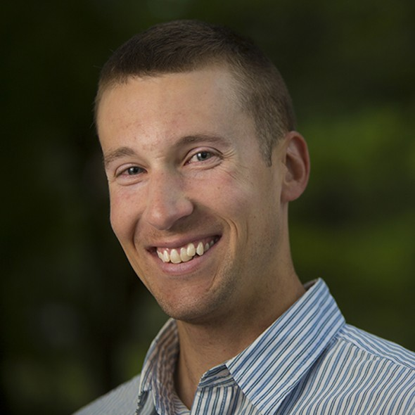

Federal Water Agency, in Course Correction, Courts Private Investment
Bureau of Reclamation showcases five water projects for private investors.
By Brett Walton, Circle of Blue
In early May, Bureau of Reclamation officials gathered the world’s top builders and bankers for a meeting at the Sheraton West hotel conference room in Lakewood, Colorado, a Denver suburb that abuts Rocky Mountain foothills.
Reclamation faces a conundrum.The assets of the federal agency that operates many of the largest dams and canals in the American West are aging.Maintenance costs are rising.Rural water supply systems and other projects authorized by Congress decades ago are tens of billions of dollars away from completion.
Reclamation would typically turn to Congress for more money.But David Murillo, Reclamation’s acting commissioner, told attendees what should be obvious to anyone who is paying attention: the Republican-led Congress does not want to increase spending.Unless elected leaders have a change of heart, Murillo said, there is not enough money for the bureau to do its work — maintaining existing canals, reservoirs, pumping plants, bridges, access roads, and desalination facilities
and constructing authorized projects to deliver water to small communities and meet legal requirements for water quality.
In calling the meeting, which functioned as a sales pitch for five water projects that are candidates for investment, Reclamation was testing a different path, one used occasionally for U.S. municipal water systems but rarely for federal water projects: bringing in private dollars and management skill to speed up construction and transfer risk.
The industry calls these deals, of which there are many varieties, public-private partnerships, or P3s, and they are a trendy remedy for ailing water systems.Trump administration officials say that P3s will play a large role in the president’s forthcoming infrastructure package.Smaller moves are already evident.The administration’s 2018 budget proposal eliminates a $US 498 million U.S. Department of Agriculture grant and loan program for rural water systems, justifying the cut by arguing that small communities can draw funding instead from the private sector.
Murillo was blunt about the predicament.
'We’re in a new world now, guys,' the acting commissioner said in his welcoming remarks on May 9.'There’s no money.We don’t have money.We’ve got to find where else to find it.'
Murillo could simply look around the room.The attendance list turned heads.Appearances by most of the major players, and on short notice, indicated great interest in the pitch.
Among the more than 200 attendees were representatives from investment banks, private equity groups, and infrastructure funds from the United States and abroad.There was Macquarie Capital, an arm of the financial group that recently sold a $US 1.7 billion stake in Thames Water, which supplies drinking water to London.Societe Generale, one of the largest banks in Europe, was in the crowd, as was the Dutch Infrastructure Fund.Citigroup had two representatives and JPMorgan, one.Groups with experience managing municipal water systems — such as Table Rock Infrastructure Partners, which operates one of the few public-private partnerships in the U.S. drinking water sector, in Rialto, California — got to shake hands with officials from irrigation districts and state water departments.
Major engineering firms, the companies that would likely do the digging and lay the concrete, were also represented.Among them: Kiewit Corporation, the Omaha-based firm that last month won a $US 275-million contract to repair the broken spillway at California’s Oroville Dam; Poseidon Water, which built the country’s largest desalination plant, in Carlsbad, California; and Arup, which designed a water-intake tunnel for Las Vegas that pierces the deepest reaches of Lake Mead.
Infrastructure might seem a stodgy pursuit when there are unicorns — billion-dollar startups — to chase in Silicon Valley.But in an era of low interest rates and slow growth in general, assets with predictable, stable returns that are locked in for decades have a broad appeal.
'It used to be that these types of meetings were a niche deal,' Martin Doyle, director of the water policy program at Duke University, told Circle of Blue after attending the event.'But at this one all the mainstream banks and engineering firms were present.'
The timing of the meeting is auspicious.The White House has repeatedly floated the idea of a $US 1 trillion infrastructure program, the details of which will be revealed in broad strokes in the coming weeks.Comments from Trump administration officials, including Transportation Secretary Elaine Chao, indicate that only one-fifth of that sum might come from direct federal spending.Private dollars and other incentives would account for the balance.Reclamation’s meeting, as it turns out, could be seen as a precursor to a new era of federal water infrastructure investment in the United States.
The new world Murillo spoke of did not blow in overnight.The seeds of Reclamation’s interest in public-private partnerships were sown in the previous administration, after President Obama established in December 2015 the Natural Resources Investment Center within the Department of the Interior, the parent agency to the Bureau of Reclamation.
Doyle was one of the first in the door.He took a leave of absence from Duke in January 2016 to become the center’s senior conservation finance fellow to study barriers and opportunities for private capital in public infrastructure.
Doyle points to three 'megatrends' pushing P3s forward.First is aging infrastructure.The average age of Reclamation’s 489 dams is 69 years old.Second is declining government funding.Federal spending on water and transportation infrastructure decreased 19 percent between 2003 and 2014, according to the Congressional Budget Office.Third is a private sector that, in the face of low interest rates, is hungry for long-term investments with steady returns.
What is the benefit to a federal agency, and by extension, the public?Jill Jamieson, a managing director at Jones Lang LaSalle, a consultancy, noted several advantages.A federal agency can off-load the risk of cost overruns and complex engineering to a private funder.The Olmsted Locks and Dam, a U.S. Army Corps of Engineers project on the Ohio River, for instance, began construction in 1993.It is still not complete and is more than $US 2 billion over budget.A private partner can also think long-term and not be captive to the scraps of funding that emerge from annual budget battles.That means being able to shoulder higher upfront costs — for, say, solar panels to generate electricity — that will result in lower operating expenditures over thirty or forty years.Those requirements can be made explicit in contracts that link payments to performance.
'We can build cheaply and defer maintenance or we can build to last,' Jamieson told Circle of Blue.
But Doyle notes that resistance from an American public that is unfamiliar with private sector deals and wary of being screwed over by government agencies that do not enforce contracts is still a formidable hurdle.Londoners were certainly not pleased with Thames Water when Macquarie was involved.The company earned a record 20-million-pound fine in March from United Kingdom regulators for dumping sewage into the Thames.
One of Doyle’s duties at the center was to scour Reclamation’s assets and authorized projects to identify potential candidates for private sector deals.It was not an easy task.Not only is Reclamation’s portfolio expansive — 8,100 miles of canals, 76 hydropower plants, 492 pumping plants, 300 bridges crossing dams and canals — but the laws that govern each project give rise to an incredible diversity of legal structures.
Projects are broadly divided into two categories.Reserved works are those that Reclamation owns, operates, and maintains.Transferred works, which account for two-thirds of its portfolio by number, are those in which Reclamation holds ownership.But the responsibility for operations and repairs is given to a partner agency, generally an irrigation district or local water users association.Adding to the complexity, hundreds of projects have their own authorizing legislation that spells out revenue and cost-share requirements.
The variety complicates Reclamation’s potential P3 arrangements, Doyle said.'Each deal is bespoke, very specific,' he explained.'You have to do almost everything from scratch.The transaction costs are considerable.The hope is that after a number of deals happen there will be less creative writing and more copy-paste.'
Doyle and his team came up with the five projects that were highlighted at Reclamation’s May 9 meeting.The projects represent a range of options, from the logistically simple to the legally complex.They are:
Some of the projects, such as the New Mexico rural water system, are not complete.Others like the Paradox Valley unit and the Yuma facility have been built but need to be upgraded.For the Kachess pumping station Reclamation is involved only because the pump would draw water from a Reclamation reservoir.
Despite the variety and complexity, there is plenty of demand from investors, Jamieson said.
'There’s more money sitting on the sidelines looking for projects than there are projects looking for money,' Jamieson told Circle of Blue, noting that for every P3 project she has worked on, from a Smithsonian parking garage to university buildings, there are 30 to 40 groups showing interest.
Jamieson is advising Reclamation and the U.S. Army Corps of Engineers as the agencies think through the P3 process.She sees two main constraints.
One is revenue.Investors want consistent returns over 30 to 50 years.Payment can come from user fees, such as charges for water.That would be the case for the $US 200 million Kachess pumping plant, which farmers in the Yakima Valley view as drought insurance, and would be willing to pay for, according to representatives from the Roza Irrigation District, a project proponent that presented at the meeting.The district has never undertaken such a large project and is looking to offload some of the risk.
But user fees have a hitch: some fees collected by Reclamation projects are directed to the U.S. Treasury or other funds.A change in legislation might be needed in that case to make a P3 project viable.
Payment could also come from a dedicated congressional budget appropriation.But that leads to the second constraint.Office of Management and Budget rules dictate that the full cost of payment, even if payments will be made for 50 years, be counted as a lump sum in the budget for year-one of the program.For example, a $US 1 billion program paid over 50 years does not go into the books as $US 20 million per year; it is scored as a one-year $US 1 billion appropriation.Such a large sum would be rejected by Congress.Both Doyle and Jamieson said that this is a budgetary nuance that the Trump administration needs to understand if it truly wants more private investment.
'If the federal government wants to get serious about P3s then it has to account for how to address them in government budgeting and spending,' Doyle emphasized.
Jamieson cautions that not every federal project is a good candidate for a private partner, especially if legal, revenue, and ownership risks are not clearly defined.
Though common in Canada and Europe, there are relatively few P3 deals in the U.S. water sector from which to draw lessons and almost zero examples of deals involving federal water assets.The University of North Carolina’s Environmental Finance Center completed one of the most detailed evaluations of municipal P3s, which was published in February.It found 'neither miracles nor devastation' for water utility finances in nine deals it studied in the United States and Canada, according to Jeff Hughes, the report author.
The U.S. Army Corps of Engineers, the other federal agency with a hand in building water infrastructure, is looking at P3 arrangements for two projects: Grand Prairie, an irrigation project in eastern Arkansas that will reduce reliance on unsustainable groundwater pumping, and the Fargo-Moorhead diversion, a flood-control project in North Dakota and Minnesota.
The Reclamation meeting was the finance equivalent of speed dating.Representatives from the five projects gave 20 to 30 minute presentations, laying out benefits and drawbacks.Jamieson shepherded the process, summarizing what might be the best P3 model for each project.
Now it is the investors turn to respond.Reclamation issued a request for information on April 25.The request is designed to gauge investor interest: Which projects are best suited for P3?How might payments be structured?What risks should Reclamation retain and which should be transferred to the private sector?
After assessing the responses, which are due June 14, Reclamation will decide whether there is enough interest to call for formal proposals.
Political appointees in the Bureau of Reclamation were enthusiastic about the meeting.Alan Mikkelsen, named Reclamation’s second-in-command in April, told attendees that the agency supports the president’s preference for private sector capital.Mikkelsen promised that the one-day event was just the start.
'In addition to presentations you’ve heard this afternoon, we’ve got a lot more opportunities out there to promote P3 with our stakeholders,' Mikkelsen said.'Treat the effort today as appetizer or teaser.'
Brett writes about agriculture, energy, infrastructure, and the politics and economics of water in the United States.He also writes the Federal Water Tap, Circle of Blue’s weekly digest of U.S. government water news.He is the winner of two Society of Environmental Journalists reporting awards, one of the top honors in American environmental journalism: first place for explanatory reporting for a series on septic system pollution in the United States(2016) and third place for beat reporting in a small market (2014).He received the Sierra Club’s Distinguished Service Award in 2018.Brett lives in Seattle, where he hikes the mountains and bakes pies.Contact Brett Walton
Posted On: 2017-05-25T00:00:00
Posted By: Brett Walton

Content Date: 2017-05-25
Download Date: 2021-05-12
Document ID: L0C04BO0S